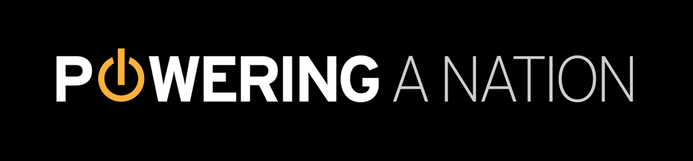

Home
Coal
Wind
Electrical
Roping the wind
Once considered a burden, the wind is now reviving the Texas town of Roscoe by creating new jobs and bringing people back, giving a second chance to this once-dying community.